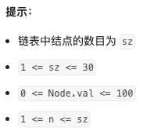

代码随想录算法训练营第四天| 24.两两交换链表中的节点、19.删除链表的倒数第N个节点、面试题02.07.链表相交、142.环形链表II。
代码随想录算法训练营第四天| 24.两两交换链表中的节点、19.删除链表的倒数第N个节点、面试题02.07.链表相交、142.环形链表II。
24.两两交换链表中的节点
题目链接：力扣题目链接
文章讲解：代码随想录(programmercarl.com)
视频讲解：帮你把链表细节学清楚！ | LeetCode：24. 两两交换链表中的节点
状态：AC
思路
- 定义新的头结点，定义指针
p = newHead，定义两个新的结点tempNode1.Val = 2，tempNode2.Val = 1（这里的值1和2是为了简化描述）

- 使用新的结点重新进行连接，并且
p前进到下一个位置（注意连接顺序，防止断链）tempNode2.Next = p.Next.Next.NexttempNode1.Next = tempNode2p.Next = tempNode1p = p.Next.Next
代码
1 | |
19.删除链表的倒数第N个节点
题目链接：力扣题目链接
文章讲解：代码随想录(programmercarl.com)
视频讲解：链表遍历学清楚！ | LeetCode：19.删除链表倒数第N个节点
状态：AC
思路
定义两个指针p和q，指针p先出发，指针q保持与p距离为n之后再出发，这样q.Next则是待删除的元素。
会不会出现
n大于链表长度的情况（例如链表长度为5，删除倒数第8个元素）：不会，leetcode题解中给出。
代码
1 | |
面试题02.07.链表相交
题目链接：力扣题目链接
文章讲解：代码随想录(programmercarl.com)
状态：AC
思路
假设是两个一维数组（只是为了方便逻辑上描述），查看是否相交，那么需要“尾部对齐”。假设长的链表开始的索引为0，我们需要从短的数组的开始。大意如下图


走到末尾都没发现有相同地址的节点则不存在相交的情况。
- 尾部对齐操作：遍历两个链表（一组指针
p = newHeadA.Next和q = newHeadB.Next），求各自的长度。 - 重新定义一组指针（
p1 = newHeadA.Next和q1 = newHeadB.Next），让其中更长的链表的指针移动到和短的同步位置（这里可能是Go语言的特性？C语言不需要此操作，不重新定义指针p和q回不到起始位置） - 同时向前移动，判断是否地址相同
代码
1 | |
142. 环形链表II
题目链接：力扣题目链接
文章讲解：代码随想录(programmercarl.com)
视频讲解：把环形链表讲清楚！| LeetCode:142.环形链表II
状态：想不出思路后看了卡哥的讲解恍然大悟，AC！
思路
最开始没有审题，当成了这道题是在问是否存在环，后来发现这只是第一问
这道题需要返回的是：如果链表有环，那么返回最后一个结点链接到了哪个结点上。
首先要找到，链表是否有环，这里使用的是快慢指针的算法，快指针速度为2，慢指针速度为1。若快指针走到了终点说明没有环；如果两个指针相遇说明有环。
因为相对速度差1，所以二者必相遇
找到入口：（卡哥视频讲的很好，如果有疑问一定看完视频再提问）
为什么一圈必定会追上：假设他们同时进入入口（整个链表就是个环），慢指针走一圈后，快指针走两圈。如果快指针先进入，那么追上慢指针必定走不到一圈。
最后推出来x=z，意味着此时的快指针降速（速度变为1），同时新定义的指针从头开始运动，两者必定在入口处相遇
代码
1 | |
小结
今天重新写了下链表的实现（主要是vscode没有装调试leetcode插件），部分题都是自己在GoLand中自己写函数构造的链表，最后单独写了个文件保存这部分代码（主要就是新建链表和打印链表），新建链表是通过一个数组传要初始化的值。当然了，今天的也只有两道题可以用，后两道直接在leetcode的网页上写了，看起来挺复杂的还担心不好debug，理清思路之后写起来很快，也不会出错。
1
2
3
4
5
6
7
8
9
10
11
12
13
14
15
16
17
18
19
20
21
22
23
24
25
26
27
28
29
30
31
32
33
34package InitLinkList
import "fmt"
type ListNode struct {
Val int
Next *ListNode
}
func InsertElem(head *ListNode, nums []int) *ListNode {
newHead := &ListNode{
Val: 0,
Next: head,
}
p := newHead
for _, v := range nums {
p.Next = &ListNode{
Val: v,
Next: nil,
}
p = p.Next
}
return newHead.Next
}
func PrintList(head *ListNode) {
p := head
for p != nil {
fmt.Printf("%d\t", p.Val)
p = p.Next
}
fmt.Println()
}Go有些语法还不是很了解，今天发现了跨文件调用需要将
变量名和函数名首字母大写，也叫作导出。从一些语法来看Go现在给我的感觉他就不想Java那种强面向对象编程。这点还挺好的（对我个人而言），很灵活，调用的时候也不需要实例化（也没这一种说法）。后三道题（最后一道题指的求是否存在环的过程）考研复习408的时候已经见过，只不过这次的身份发生了变化，面对这道题状态也不同。考研复习时候遇到手撕代码的题首先想到的是如何拿分，没思路就暴力算法。有额外时间再考虑优化。如果再试卷上我可能会使用空间复杂度更大的算法，空间换时间。但是现在在求职中，要好好的理解每一道题，每一种优化的思路，题干加以限制：
空间复杂度为O(1)。真的需要认真思考，链表相交没有想出来，看了卡哥的讲解理解了。现在的刷题状态是这样的：多给自己思考的时间争取想到最优的解法。无论是否解出来再去看看卡哥的讲解和代码，看看别人写的和自己写的差距在哪。我的代码现在经常出现这种逻辑，对于个别情况需要单独判断，而别人的则不需要，因为自己在边界情况考虑的欠妥。明天周日休息一天。但是事情还是挺多的。
第一周打卡结束！4天结束！